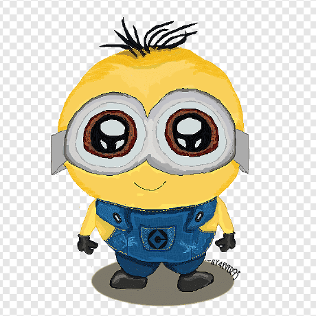
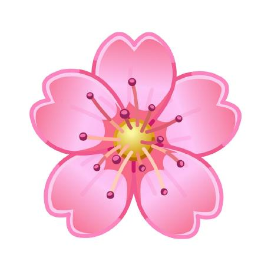
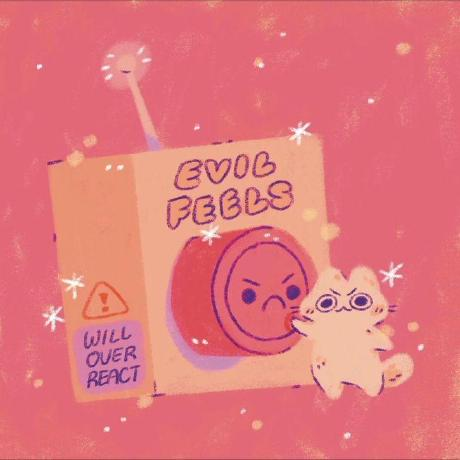
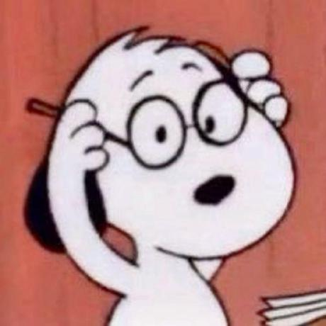

Cabeleleilas




Nós, um grupo inovador de quatro desenvolvedoras, unimos nossas habilidades para criar um site dedicado à ??
Utilizando HTML para estruturar o conteúdo, CSS para oferecer um design elegante e atraente, e JavaScript para garantir uma experiência interativa e personalizada,
conseguimos construir uma plataforma que ??.
Frase motivacional